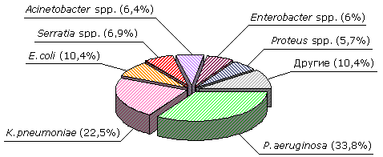

НОЗОКОМИАЛЬНАЯ ПНЕВМОНИЯ:
ПРАКТИЧЕСКИЕ РЕКОМЕНДАЦИИ ПО ДИАГНОСТИКЕ,
ЛЕЧЕНИЮ И ПРОФИЛАКТИКЕ (ПРОЕКТ)
X. | ЧУВСТВИТЕЛЬНОСТЬ К АНТИБИОТИКАМ ОСНОВНЫХ ВОЗБУДИТЕЛЕЙ НОЗОКОМИАЛЬНЫХ ПНЕВМОНИЙ |
При выборе антибиотиков для эмпирической антибактериальной терапии НП клиницисты должны ориентироваться на те локальные данные по антибиотикорезистентности возбудителей, в отделениях, где находятся пациенты с НП или лечебном учреждении. Это обусловлено значительными вариациями как преобладающих возбудителей, так и их чувствительности к антибиотикам в зависимости от профиля отделения. Важным является периодическое обновление этих данных, так как устойчивость бактерий к антибиотикам не является постоянным параметром, а может изменяться со временем в зависимости от структуры и частоты использования антибиотиков. Ниже приведены данные многоцентрового исследования этиологии НП и резистентности выделенных возбудителей к антибиотикам, проведённого в российских стационарах в 1997-1999 гг. Эти данные можно рассматривать только как ориентировочные, так как они не отражают ситуацию в конкретном отделении/стационаре.
В исследовании, проведенном в ОРИТ 28 стационаров из различных регионов России, было исследовано 574 образца, полученных от пациентов с нозокомиальными инфекциями нижних отделов дыхательных путей. Материалом для исследования явилась мокрота (54,8%), аспират из трахеи (26,1%), промывные воды бронхов (9,6%), плевральная жидкость (5%), другие виды (4,5%). Микроорганизмы, выделенные при исследовании вышеуказанных образцов, представлены на рис. 2.
|  |
| Рисунок 2. | Структура возбудителей, выделенных при инфекциях нижних дыхательных путей (n=699) |
В отношении нозокомиальных штаммов P.aeruginosa наибольшей активностью из β-лактамов обладали цефтазидим и имипенем (табл. 4). Устойчивые к антисинегнойным пенициллинам штаммы составили более 30%. Высокая активность в отношении этих возбудителей была выявлена у амикацина. Самая низкая активность против синегнойной палочки была у гентамицина, устойчивыми к которому были более 60% выделенных штаммов.
Определённым ориентиром для определения возможности использования антибиотиков для терапии НП являются данные по антибиотикорезистентности нозокомиальных возбудителей в ОРИТ. Так, по данным многоцентрового исследования в России, высокой активностью в отношении штаммов P.aeruginosa обладал цефепим. Нечувствительными к нему были 13,5% штаммов синегнойной палочки.
По данным исследования «Micromax», в московских стационарах наиболее активными против нозокомиальных штаммов P.aeruginosa и Acinetobacter spp. были цефтазидим, цефепим и имипенем, устойчивость к которым у данных микроорганизмов составила 29, 26 и 14% соответственно [8].
Штаммы Acinetobacter spp. отличались высокой резистентностью к антисинегнойным пенициллинам, цефотаксиму и цефтриаксону. Значительно меньший процент резистентных штаммов выявлен к цефтазидиму. Наибольшей активностью против Acinetobacter spp., выделенных при нозокомиальных инфекциях нижних отделов дыхательных путей, обладали имипенем, амикацин и ципрофлоксацин.
Все штаммы K.pneumoniae были чувствительны к имипенему. Хорошей активностью характеризовались амикацин и ципрофлоксацин. Цефепим обладал хорошей активностью против штаммов K.pneumoniae: устойчивыми к нему были 13,6% нозокомиальных клебсиелл [9]. Устойчивость клебсиелл к цефалоспоринам III поколения была обнаружена почти у половины выделенных штаммов.
| Таблица 4. | Резистентность грамотрицательных бактерий, выделенных из респираторных образцов (%) |
| Микроорганизм |
AM |
PP |
PTс |
XL |
XM |
CT |
TX |
TZ |
IP |
GM |
AK |
CI |
| P.aeruginosa (236) |
- |
45,3 |
30,9 |
- |
- |
- |
- |
19,1 |
23,7 |
66,1 |
11,0 |
33,5 |
| K.pneumoniae (157) |
98,1 |
73,2 |
29,3 |
60,5 |
63,7 |
43,9 |
47,2 |
37,0 |
0,0 |
62,4 |
10,8 |
15,3 |
| E.coli (58) |
62,1 |
56,9 |
12,1 |
51,7 |
27,6 |
22,4 |
24,1 |
8,6 |
0,0 |
31,0 |
1,7 |
8,6 |
| Acinetobacter spp. (45) |
- |
84,4 |
46,7 |
- |
- |
- |
- |
57,8 |
0,0 |
80,0 |
15,6 |
53,3 |
| Serratia spp. (48) |
93,7 |
85,4 |
47,9 |
93,8 |
97,9 |
29,2 |
37,5 |
22,9 |
0,0 |
85,4 |
8,4 |
16,7 |
| Enterobacter spp. (42) |
76,2 |
50,0 |
31,0 |
81,0 |
66,7 |
28,6 |
33,3 |
33,3 |
0,0 |
35,7 |
11,9 |
16,7 |
| Proteus spp. (40) |
85,0 |
50,0 |
12,5 |
55,0 |
72,5 |
32,5 |
20,0 |
10,0 |
0,0 |
70,0 |
7,5 |
10,0 |
АМ - ампициллин, РР - пиперациллин, РТс - пиперациллин/тазобактам, XL - ко-амоксиклав, ХМ - цефуроксим, СТ - цефотаксим, ТХ - цефтриаксон, TZ - цефтазидим, IP - имипенем, GM - гентамицин, АК - амикацин, CI - ципрофлоксацин
По данным, полученным в Москве, хорошей активностью в отношении нозокомиальных штаммов клебсиелл обладали имипенем, к которому были чувствительны все микроорганизмы, а также ципрофлоксацин и цефепим, устойчивость к которым составила 14% и 16%, соответственно [8].
Штаммы E.coli обладали хорошей чувствительностью к большинству антибиотиков. Все возбудители были чувствительны к имипенему, почти 80% - к цефалоспоринам III поколения. Выявлена высокая активность в отношении кишечной палочки у пиперациллина/тазобактама, амикацина и ципрофлоксацина.
Отмечена высокая активность цефепима в отношении нозокомиальных штаммов E.coli. Нечувствительными к нему были всего 4,9% нозокомиальных изолятов [9].
Подобная активность антибиотиков в отношении нозокомиальных кишечных палочек была отмечена в лечебных учреждениях г. Москвы. К имипенему все штаммы E.coli были чувствительными. Устойчивость к цефепиму, цефтазидиму и ципрофлоксацину составила 3, 5 и 12% соответственно [8].
Штаммы Serratia spp. обладали хорошей чувствительностью к имипенему, амикацину и ципрофлоксацину. Цефалоспорины III поколения имели более низкую активность в отношении данных микроорганизмов. Более 90% микроорганизмов рода серрация были устойчивы к ампициллину, амоксициллину/клавуланату и цефуроксиму.
В отношении Enterobacter spp. хорошей активностью обладали имипенем, к которому не было выявлено резистентных изолятов, амикацин и ципрофлоксацин. К аминопенициллинам и цефуроксиму были резистентны большинство энтеробактеров.
Нозокомиальные штаммы Proteus spp. характеризовались хорошей чувствительностью к большинству антибиотиков. Высокая резистентность была выявлена только к аминопенициллинам, в том числе ингибиторозащищенным, а также к пиперациллину и цефуроксиму. Кроме того, низкой активностью в отношении протеев характеризовался гентамицин.
Отмечена высокая активность цефепима против Enterobacter spp., Proteus spp., Serratia spp., выделенных от пациентов с нозокомиальными инфекциями в ОРИТ. Устойчивыми к нему были только 5,1, 4,2 и 9,4% изолятов соответственно [9].
В московских стационарах также высокой активностью против штаммов Enterobacter spp., Serratia spp., Citrobacter spp. Morganella spp., Providencia spp. обладали имипенем, цефепим, цефтазидим и ципрофлоксацин, резистентность к которым составила 3, 11, 21 и 9% соответственно [8].
Кроме грамотрицательных микроорганизмов, при нозокомиальных пневмониях этиологически значимым является S.aureus, данные по резистентности респираторных штаммов которого представлены в таблице 6.
| Таблица 6. | Устойчивость штаммов S.aureus, выделенных
из респираторных образцов (%) |
| S.aureus (74) |
|---|
| оксациллин | 37,8 |
| ко-тримоксазол | 0 |
| левофлоксацин | 10,8 |
| ципрофлоксацин | 14,9 |
| гентамицин | 17,6 |
| линезолид | 0 |
Штаммы S.aureus, выделенные из респираторных образцов, характеризовались хорошей чувствительностью к фторхинолонам, ко-тримоксазолу, линезолиду. В то же время выявлен значительная доля (37,8%) MRSA.